Two longitudinal anchor mice reproduce the article-level structure; three additional mice extend the neural result.
ANM54 and ANM181 carry the full longitudinal reward-contrast design and provide the article-like anchor. ANM112, ANM113-conditioning and ANM185 add independent neural datasets with strong image/ROI/extraction QC. Across all five mice, the most reproducible cellular relation is outcome→late coupling; predictive loading is less conserved.
Article-like longitudinal replication in ANM54 and ANM181
These are the two mice that support the full D3–D9 longitudinal story, including D6 specificity, population geometry, individual cellular loadings, and cross-day stability.
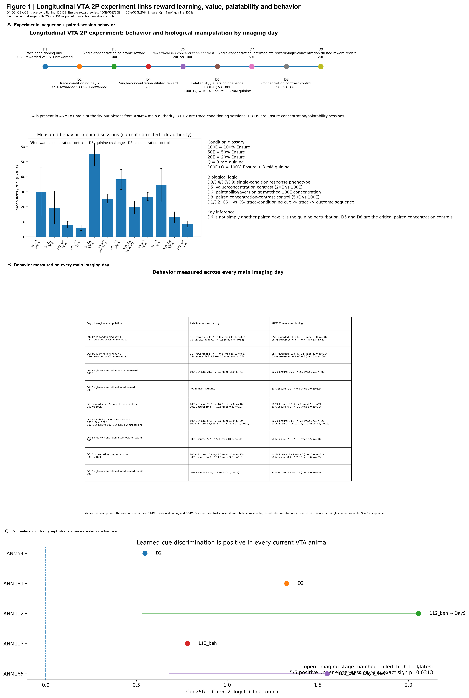
Longitudinal design and behavior
Full longitudinal experimental structure, behavioral organization, and session coverage for the two anchor mice.
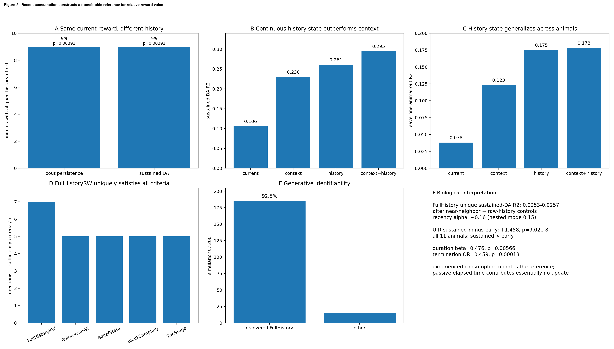
History builds a reward reference
The longitudinal behavioral context underlying the neural comparisons.
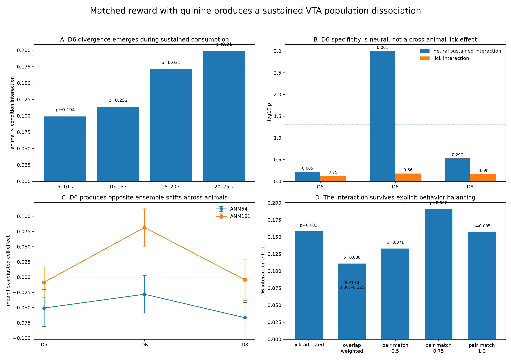
D6 quinine-specific sustained dissociation
The replicated cross-animal D6 interaction survives lick controls and independent extraction.
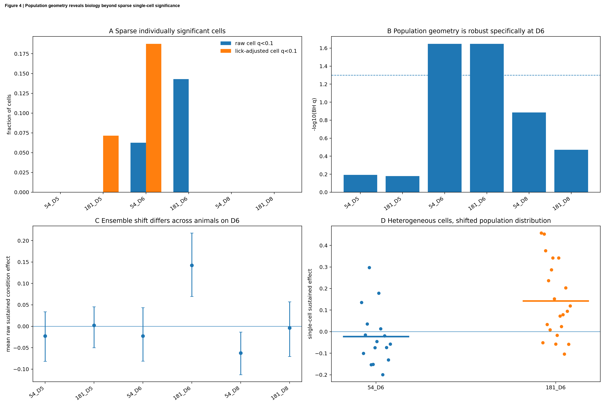
Population geometry beyond single cells
Raw D6 population geometry is significant in both ANM54 and ANM181 and remains present under independent extraction.
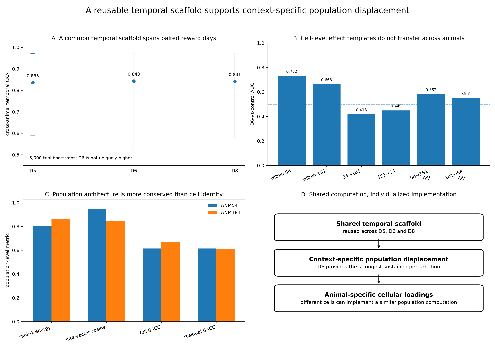
Shared scaffold, individualized loadings
Population organization is more reproducible than exact neuron-by-neuron signed templates.
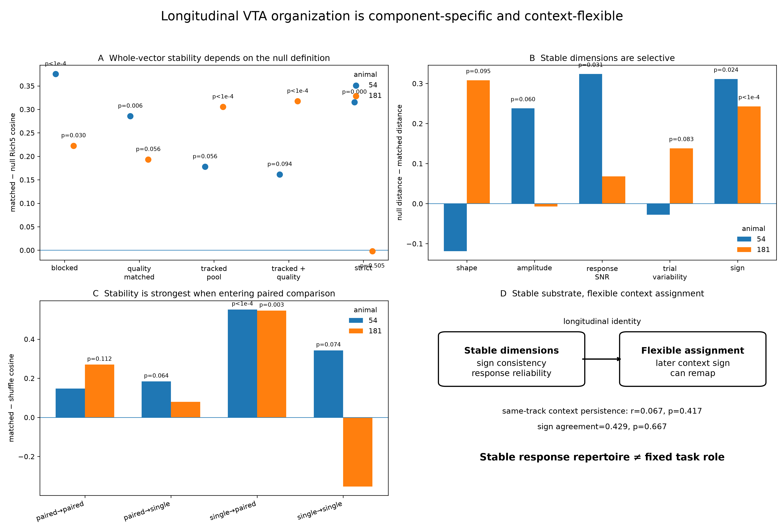
Longitudinal component and task stability
ANM54 shows broad whole-vector stability; ANM181 is more null-family dependent but retains component-level stability.
Cell-level, time-resolved, specificity and robustness panels
The full result is not based on one summary statistic.
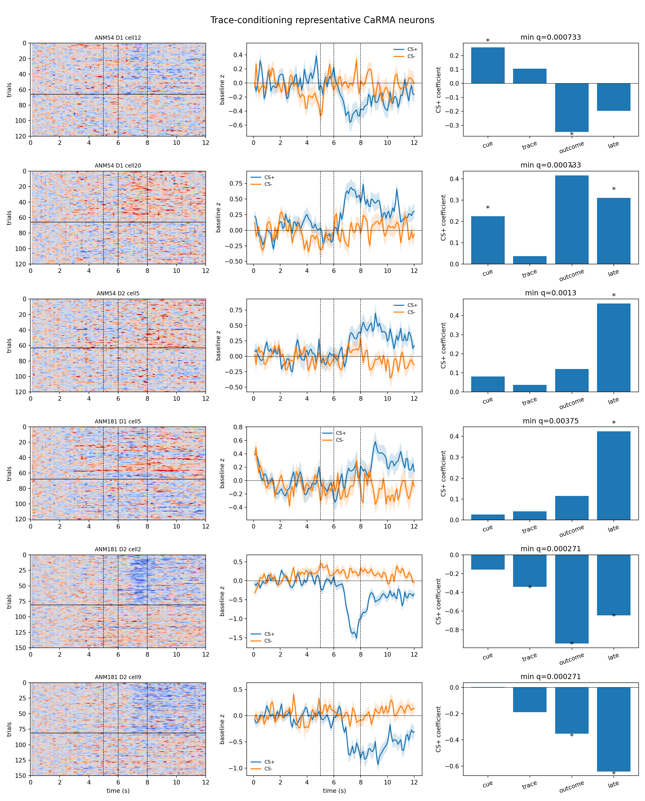
Representative neurons
Heterogeneous cellular implementations underlying the population-level structure.
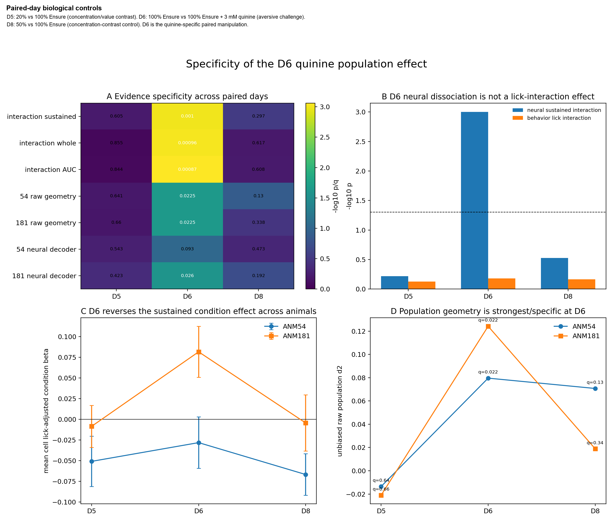
D6 specificity across paired days
D5 and D8 do not reproduce the D6 interaction under the same conservative analysis.
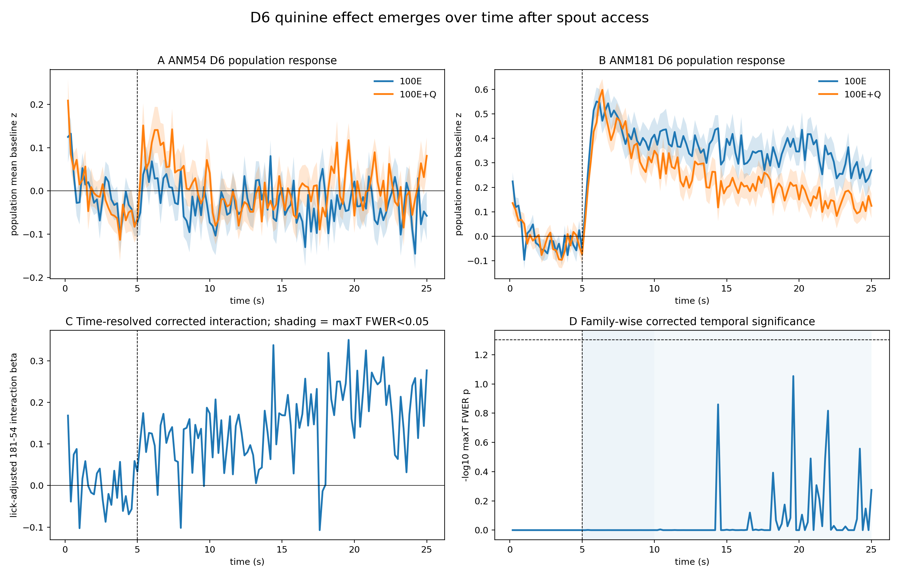
Time-resolved D6 interaction
The strongest divergence appears late rather than as a monotonic early-to-late ramp.
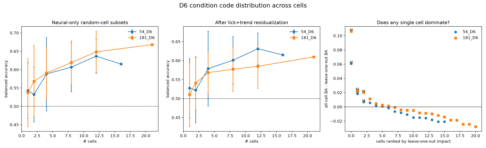
Distributed decoding
Information is distributed across the population rather than carried by a single dominant neuron.
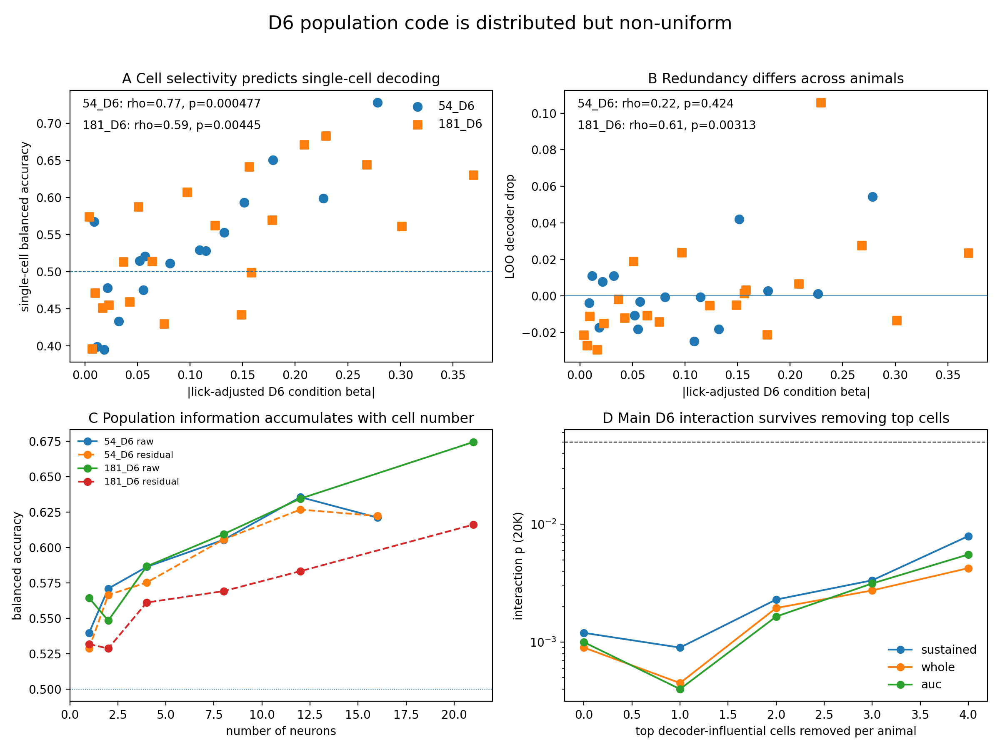
D6 coding architecture
Cellular and population-level summaries connecting response heterogeneity to the distributed code.

Independent extraction robustness
Sustained, whole-window and AUC interactions, plus D6 geometry, survive an alternative extraction rule.
ANM112, ANM113 and ANM185 are full neural datasets, not low-quality support.
Short acquisition count affects the resolution of some label tests, but does not downgrade image quality, soma identity, extraction stability, or population analysis.

Motion, independent ROI support, extraction robustness and event-window population geometry for ANM112/113/185. PDF
ANM112
150 strict soma-like ROIs. Local P95/P99 motion 0.224/0.324 px. Extraction-method condition effects correlate at ≥0.940 with the historical extraction.
ANM113 conditioning
124 strict ROIs. Local P95/P99 0.411/0.510 px. Cross-trial image alignment median 0.909. The separate perfusion session is analyzed independently.
ANM185
199 strict ROIs. Local P95/P99 0.424/0.651 px. Strong outcome→late coupling remains despite more flexible predictive loading.
Trial count ≠ image quality
The smaller number of condition labels limits some discrete-label p-values. Motion, neuron identity and extraction robustness are assessed independently from imaging.
Outcome→late is the shared cross-animal response structure.
The complete predictive/outcome/late PC1 is not treated as invariant across all five animals.
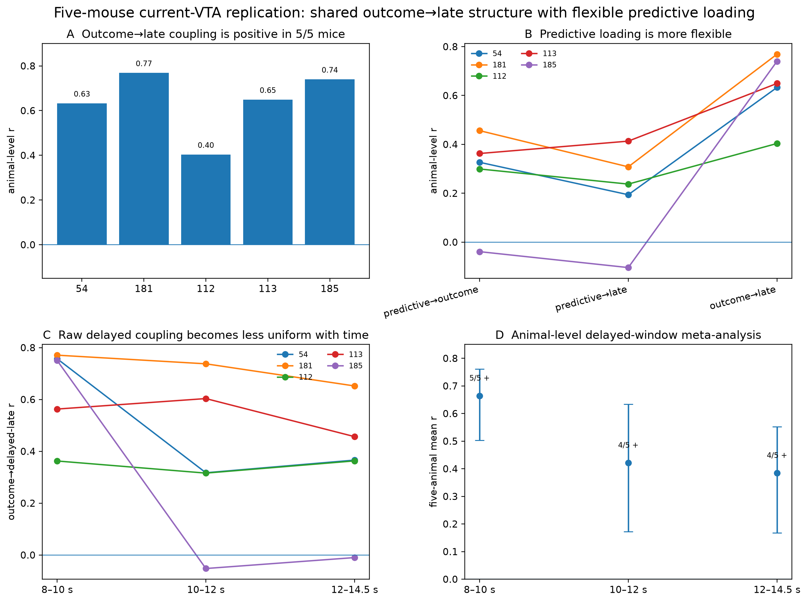
Five-mouse temporal replication and delayed-window meta-analysis. PDF
Response structure is reproducible; a kinetics-independent sustained state is not established.
Raw delayed coupling remains positive in all five mice at 8–10 s, but AR(1)-style removal of slow fluorescence carryover weakens the residual relation.

Calcium-kinetics sensitivity. PDF